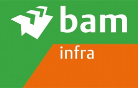
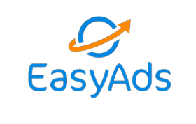
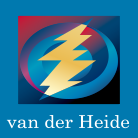
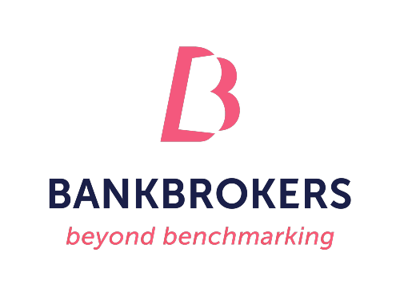
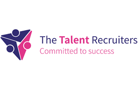
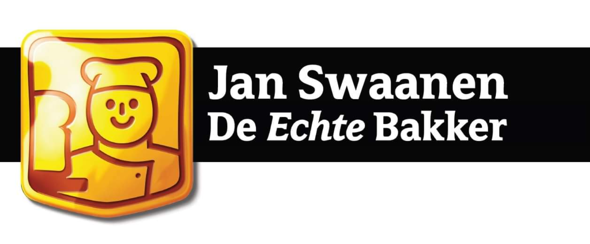
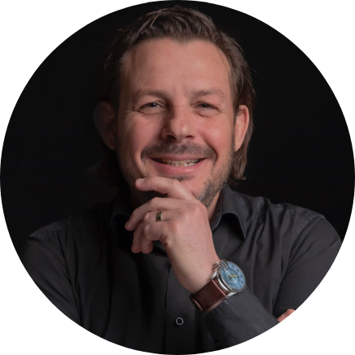

Bedrijfspsychologie zonder zweverig gedoe. Samen werken we aan zichtbaar gedrag, aantoonbaar resultaat en een fijner leven — voor jou, je team en je organisatie.
Ik richt me vooral op wat er wél kan. Wat gaat er goed, en hoe kan dat dan? Vanuit die vraag onderzoeken en beïnvloeden we zichtbaar gedrag — van jezelf en van de mensen om je heen. Steevast op basis van bewezen inzichten uit de psychologie van arbeid, gezondheid en organisaties.
Je bent veel beter en je kunt veel meer dan je denkt. Mijn aanpak is oplossingsgericht, doelgericht en directief: onze samenwerking leidt aantoonbaar en structureel tot een fijner leven voor jou en je medewerkers, en meer winst voor jouw organisatie.
Intensieve sessies waarin je je bewust wordt van hoe je jezelf en anderen beïnvloedt. Kennis en vaardigheden voor effectief gedrag — geen trucjes, maar een nieuwe manier van doen die aantoonbaar tot succes leidt.
Vraagt jouw situatie om een persoonlijke benadering? In individuele sessies onderzoeken we welke mogelijkheden jij hebt om de keuzes te maken die voor jou nodig zijn. Oplossingsgericht, doelgericht en directief.
Is iemand geschikt voor een functie? Wat is zijn of haar ontwikkelingspotentieel? Vragen die we beantwoorden met een gedegen psychologisch assessment, uitgevoerd volgens de richtlijnen van het NIP.
Groei, krimp of overname: soms moet de manier van werken vernieuwen. Hoe breng je jouw visie over op je mensen — en hoe zorg je dat iedereen het gewenste gedrag laat zien om jullie missie te behalen?
Een prikkelend en toegankelijk verhaal over gedrag, leiderschap en samenwerking. Wetenschappelijk onderbouwd, met humor gebracht, en direct toepasbaar voor jouw publiek.
‘Marnix ziet in tien minuten wat ik zelf maanden niet doorhad. Confronterend, maar altijd met een uitweg erbij.’
‘Rustig, scherp en oprecht betrokken. Ik liep leger binnen dan ik wil toegeven en kwam er met richting weer uit.’
‘Geen zweverig gedoe — gewoon een helder gesprek dat werkt.’
‘Na een reorganisatie zat mijn team muurvast. Marnix hielp ons in een paar sessies weer praten mét elkaar in plaats van over elkaar. Wat me vooral bijblijft is hoe hij de nadruk legt op wat er wél goed gaat; dat gaf ons het vertrouwen om de rest ook aan te pakken.’
‘Praktisch en direct toepasbaar, geen dikke rapporten.’
‘Ik kwam voor een burn-out en bleef voor de inzichten. Marnix legt precies genoeg uit van de psychologie erachter zodat je snapt waaróm iets werkt, zonder dat het een college wordt. Een jaar later gebruik ik zijn vragen nog steeds.’
‘Marnix is al vele jaren met onze organisatie verbonden. Hij traint onze managers op het gebied van leiderschap, samenwerking en communicatie en hij coacht onze mensen 1-op-1 op persoonlijk leiderschap. Zijn aanpak is persoonlijk, praktisch, en meteen toepasbaar.’
‘Confronterend, leidend en een stevige opinie. Niet op zoek naar een opdrachtgever die het met hem eens is. Met deze eigenschappen heeft Marnix een mooi traject gedaan bij Bankbrokers: interviews, questionnaires, een teamdag en een concrete, bruikbare rapportage. Inzicht in persoonlijke verbeterpunten én aandacht voor onvoldoende benutte complementariteit binnen het team. Zijn betrokkenheid heeft bijgedragen aan een goede dialoog en aan concrete doelstellingen en acties voor ons 2022-2023 plan.’







Afgestudeerd aan de Universiteit Utrecht in de Psychologie van Arbeid, Gezondheid en Organisaties, en geaccrediteerd door het Nederlands Instituut van Psychologen. Sinds 2010 zelfstandig bedrijfspsycholoog; daarnaast docent Toegepaste Psychologie aan Fontys Hogeschool in Eindhoven.
Een kennismakingsgesprek is altijd vrijblijvend en persoonlijk. Bel, app of mail — dan plannen we snel een moment.
Kennismakingsgesprek aanvragen